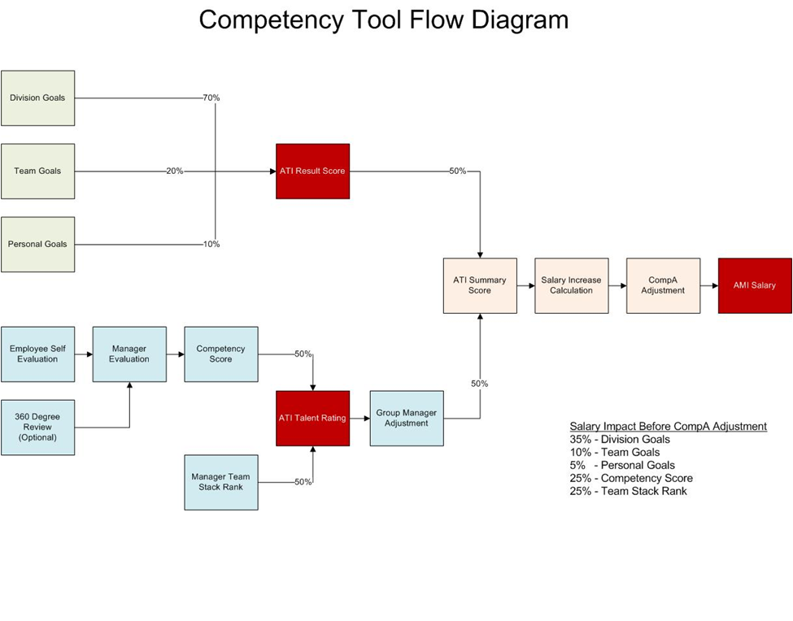

Family History Management Tool - Process Overview
Process
We encourage managers to utilize a variety of resources as they evaluate their employees performance:
- Evaluation - Managers consider the employees performance against the competencies appropriate to their grade and role. They consider the employee's completion of division
goals and feedback received during weekly 1:1's. The Evaluation menu provides a location for Managers to record the evaluation for each of their employees in their respective grade levels.
- 360 Degree Feedback - Managers should look for opportunities to receive feedback from the teammates of their employees. We do not believe that this type of feedback must be
required, but we do believe that it can be an effective approach to gathering additional feedback for the employee.
- Stack Ranking - Employees of the same grade and role should be stack ranked together. This process helps management identify those who are high performers and those who may
be in need of improvement. This also helps us identify the caliber of new hires needed to lift the organization to higher levels. The council does recommend that manager evaluations
should be completed before the team stack ranks are started.
Managers should fill out the required information for their team members, however, the final approval for salary recommendations must come from the Group Manager. It is expected that
managers will not communicate their evaluation information until Group Managers have calibrated all of their managers and given the go-ahead to do so.
Employees must be given clear concise communication regarding their performance. However, managers should not communicate to employees their stack rank positions or the specific values
given to them in their Evaluations.
The following diagram documents the logic flow of the tool.
